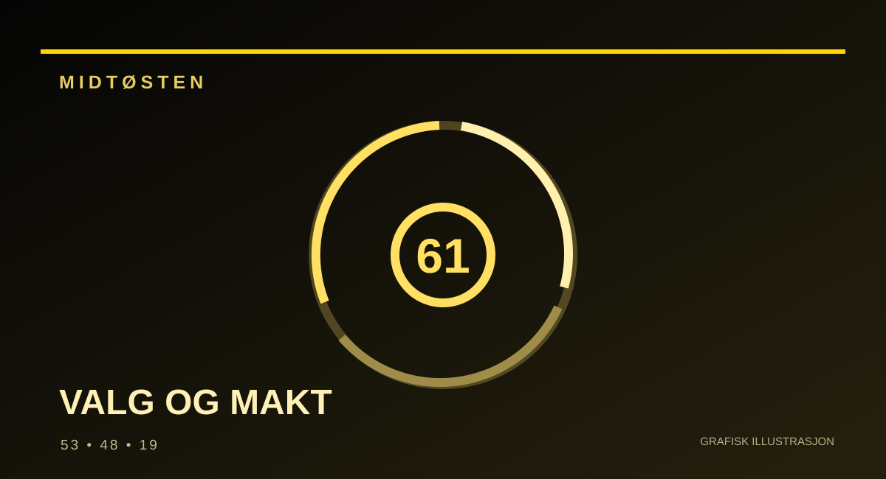

REDAKSJONELT UTKAST – IKKE PUBLISERT
UTENRIKS / DEMOKRATI · Utkast opprettet 2. november 2026
Israel har valgt – men ingen vet hvem som får makten
Benjamin Netanyahus blokk fikk 53 mandater, rivalene 48 og de arabiskledede partiene 19. Ingen står alene med flertall. Nå kan de partiene mange helst vil holde utenfor regjeringen, bli avgjørende for hvem som får styre Israel.

Etter valget 27. oktober er det ett tall som avgjør alt i Israels nasjonalforsamling, Knesset: 61. Så mange representanter trengs for et flertall i et parlament på 120.
Valgkommisjonens opptelling, offentliggjort 30. oktober, gir 27 mandater til Netanyahus Likud og 21 til Gadi Eisenkots Yashar. Til sammen har partiene som vanligvis støtter Netanyahu 53 mandater. Partiene som er plassert i den øvrige opposisjonsblokken, har 48, mens de arabiskledede listene Joint List får 11 og Ra’am 8, til sammen 19. De tre «blokkene» er en journalistisk inndeling av partier, ikke tre formelle valgallianser. Valgdeltakelsen var rundt 77,9 prosent, ifølge valgkommisjonens endelige opptelling.
Regnestykket virker enkelt: 48 og 19 er mer enn 61. Politikken er langt vanskeligere.
De 19 mandatene som endret valgkartet
Arabiske israelere møtte i stort antall ved urnene og sikret en langt sterkere representasjon enn tidligere. I intervju med Reuters pekte ledere i de arabiskledede partiene på økende diskriminering, kriminalitet i arabiske lokalsamfunn og behov for likeverdige tjenester som sentrale temaer for velgerne.
Men partiene har ulike strategier. Ra’am-leder Mansour Abbas har åpnet for å sitte i en regjeringskoalisjon. Joint Lists Yousef Jabareen har sagt at hans parti heller kan støtte en regjering fra utsiden, blant annet på grunn av uenighet om Gaza, Vestbredden og okkupasjon.
Og blant de øvrige opposisjonspartiene er det stor motstand mot et samarbeid med arabiskledede partier. Lederen for The Democrats, Yair Golan, har vært blant dem som oppfordrer til et slikt samarbeid. Avigdor Lieberman i Yisrael Beytenu har derimot avvist regjeringssamarbeid med arabiskledede partier, ifølge AP. Dermed er 48 + 19 et mulig regnestykke, ikke en inngått eller samstemt koalisjon.
Dermed er dette ikke bare et spørsmål om hvem som vil felle Netanyahu. Det er også et spørsmål om hvem som anerkjennes som en legitim samarbeidspartner i landets politiske maktfordeling.
En statsminister uten eget flertall
Netanyahu beholder rollen som fungerende statsminister mens regjeringsdannelsen avklares. Hans blokk er størst, men mangler åtte mandater. En mulighet er at deler av opposisjonen inngår et bredere regjeringssamarbeid. En annen er at motstanderne finner en løsning gjennom støtte fra arabiske partier. En tredje er fortsatt politisk fastlåsing.
Valgresultatet står fast mens påstander undersøkes
Netanyahu og Likud har etter valget satt spørsmålstegn ved stemmegivningen i arabiske lokalsamfunn og hevdet at det kan ha forekommet uregelmessigheter. Dette er anklager fra partiet, ikke dokumentasjon for at valget ble manipulert. Ra’am avviser innblanding i påståtte bestikkelser av velgere.
Ifølge AP sa valgkommisjonens leder, høyesterettsdommer Noam Sohlberg, i en felles offentlig opptreden med andre ansvarlige myndigheter at valgresultatet ikke ville bli undergravd selv om enkeltmistanker senere ble underbygget. President Isaac Herzog har i en egen offentlig uttalelse understreket at mistankene må undersøkes, men at de ikke skal brukes til å mistenkeliggjøre et helt velgermiljø. Israelsk sikkerhetstjeneste Shin Bet undersøker påstander om utenlandsk påvirkning. En domstol har samtidig behandlet restriksjonene mot enkelte pågrepne aktivister. Det er ikke grunnlag for å slutte at stemmetallene derfor blir omgjort, eller at noen av anklagene allerede er bevist.
Utfallet kan få betydning for alt fra rettsreformer og verneplikt for ultraortodokse til forholdet mellom israelske jøder og arabiske borgere og landets politikk i krig og fred. Det vil være for tidlig å skrive at ett av alternativene allerede er vedtatt.
Valgkommisjonens publiserte mandatfordeling fra 30. oktober viste 53–48–19. Den formelle oversendelsen av resultatene til president Isaac Herzog var ifølge kunngjøringen planlagt til 4. november, og ny Knesset skal etter planen samles 10. november. Etter formell kunngjøring skal presidenten etter prosedyren rådføre seg med partiene før en parlamentariker får oppdraget med å forsøke å danne regjering. Den utpekte får vanligvis 28 dager, med mulighet for forlengelse. En regjeringssondering er derfor ikke det samme som en koalisjonsavtale.
Hva er det avgjørende spørsmålet?
Det er hvem som både kan telle til 61 og overbevise de nødvendige partiene om å samarbeide. Mye av valgkampen dreide seg om Netanyahu. Men de kommende dagene kan vise at den viktigste historien handler om representasjon, politiske sperrelinjer og muligheten for å danne en regjering på tvers av gamle skiller.
Dette er et upublisert redaksjonelt utkast. Faktakontroll og redaksjonell godkjenning kreves før eventuell publisering.